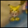
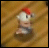
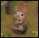
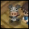

Rivais |
|||||
Desta vez, você tem rivais para cada amizade da garota! Se você se tornar bons amigos com uma certa candidata e também não tem amizade o bastante ou estão casados com outra garota, então ele irá para sua casa para falar que eles estão se casando! Isso não é tudo, Cada casal pode ter seu próprio filho. Informação de cada casal e imagens dos seus filhos estão abaixo. |
|||||
|  |
Kai + Karen: para que esses dois se casem você deve salvar a vinícola primeiro (Veja segredos) == do contrário, Karen irá embora antes que eles tenham a chance. Kai gosta de bagas de todos os tipos, então certifique-se de dar a ele muitas bagas. se você ver uma cena no qual Karen se torna bêbada no bar e kai ajuda ela, então você saberá que está perto de verem eles se casarem. Depois de eles se casarem, eles dois viverão na vinícola. Kai esta feliz como sempre, mas Karen está menos entusiastica. Ambos os pais de Karen estão felizes de ver a casa viva. Depois do bebê de Karen tiver um mês ela vestirá ele com um traje de Pikachu (ou outra coisa). Kai mencionará que seu filho é uma garota. |
||||
 |
Cliff + Ann: Cliff e Ann formam um casal muito fácil -- Cliff é fácil ser amigo e Ann é dificil de namorar. Um dos presentes favoritos de Cliff são ovos e estes são obtidos muito facilmente então certifique-se de dar um bocado a ele. Se você vê uma cena no qual Cliff está tentando alimentar seu falcão com um coelho e Ann fica chateada por causa disso, Este é o sinal que eles se casarão logo.Depois de se casarem, Cliff e Ann irão morar no Rancho Verde/Green Ranch. Eles brigam muito mas eles semprem fazem as pazes. Hall está muito feliz de ver sua filha finalmente se casando. Quando Ann tem um filho, ele a vestirá com uma roupa de dinossauro. |
||||
|  |
Jeff + Elli: Apesar de Jeff dizer que ele é como uma figura paterna de ELli, ele desenvolverá sentimentos por ela se você for amigo dele. Ele gosta de leite (Gold milk/Leite de ouro especialmente), então encha-o de muitos leites. Quando eles estão perto de se casar, você verá uma cena onde Elli e Jeff estão pescando e Elli diz que Jeff parece mais jovem do que ela pensa e Jeff fica envergonhado. Uma vez casados, os dois continuam a morar na padaria -- e francamente, eles não poderiam ser mais felizes. Elli está ansiosa para começar uma familia, embora Jeff não parece muito pronto para isso. Quando ele tiver um filho, ele a vestirá com uma roupa de galinha. |
||||
|  |
Gray + Popuri: Ser amigo de Gray é uma tarefa muito fácil, mas quando você se torna, ele começara a se abrir sobre seus sentimentos por Popuri. Ovos são provavelmente a melhor coisa pra dar para ele, embora ele também goste de ver seu cachorro. Você saberá que eles estão perto de se casar quando ver a cena no qual Gray está envergonhado comprando sementes de flores de Popuri -- e mais tarde, outra cena onde Popuri e Ann veêm que Gray plantou as flores por todo o seu rancho (Ann acha estranho, Popuri acha que é uma doçura). Gray também começa a dizer coisas como "Sim, você esta certa, Eu darei a você uma pena azil" no bar. |
||||
|  |
Harris + Maria: Harris contará a você no começo do jogo que ele tem sentimetos por Maria, Embora ele não saiba o que fazer com isto. Harris gosta de flores e leite, então quando você é amigo dele, ele finalmente começa a tomar uma iniciativa sobre seus sentimentos. Você saberpa que eles estão perto de se casar quando você vê uma cena na qual Maria dar a Harris uma carta e Harris basicamente enlouquece. Uma vez casados, Harris e Maria irão morar na casa do prefeito. Maria continuará seu trabalho na biblioteca, enquanto que Harris continuará com seu trabalho como carteiro. Quando eles tiverem um filho, mMria o vestirá com uma roupa de panda (aww); Maria faz muitas menções de que seu filho é sortudo. |
||||